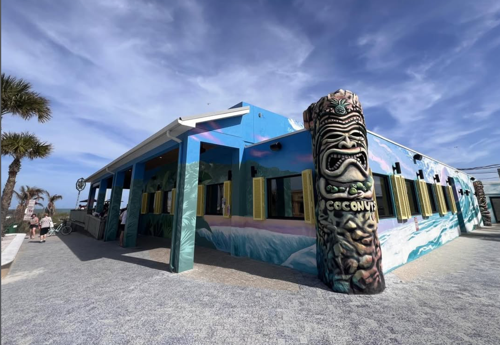
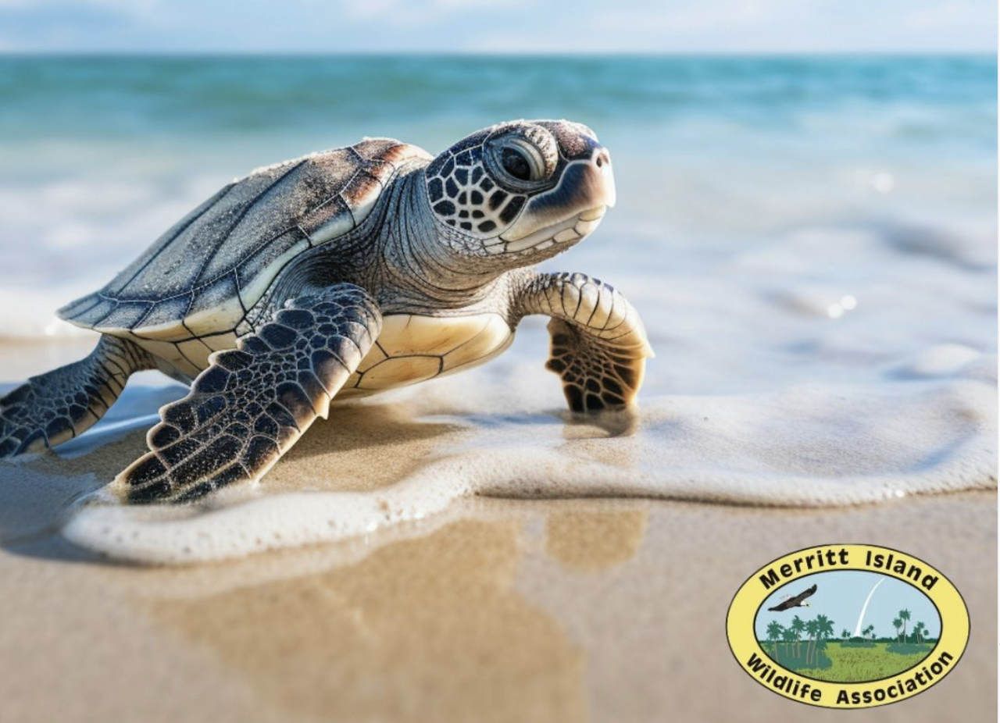
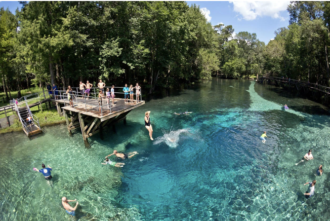
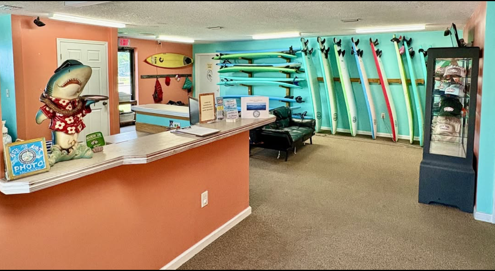
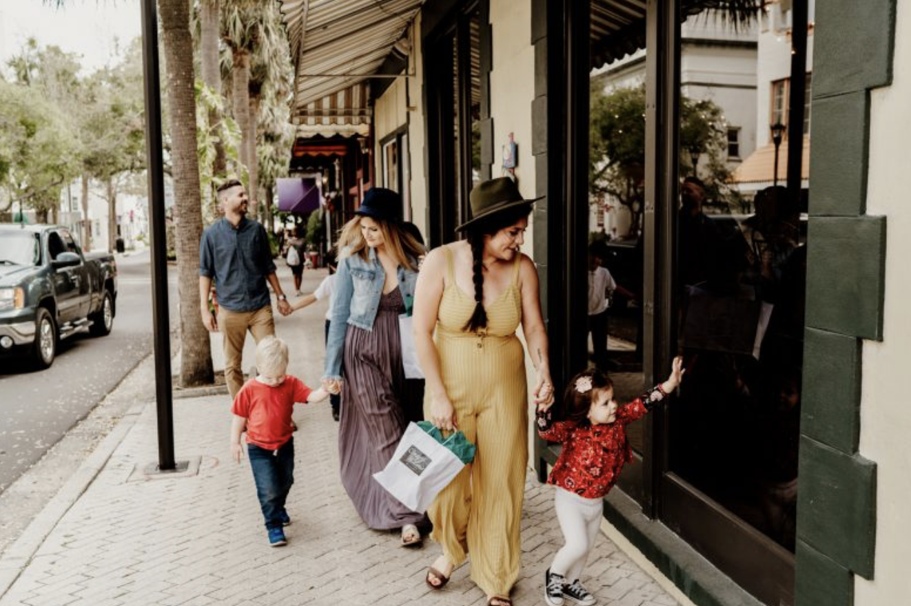
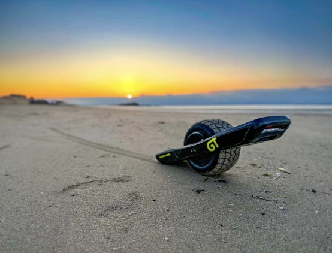

Beaches
Cocoa Beach
Cocoa Beach
The heart of it all. Sidney Fischer Park and Lori Wilson Park offer free public access with parking, restrooms, and lifeguards. N Atlantic Ave is lined with beach access points all the way up.

Beaches
North of Cocoa Beach
Canaveral National Seashore
24 miles of completely undeveloped Atlantic beach — one of the longest stretches on the entire East Coast. Loggerhead turtles nest here in summer. No concessions, no crowds.

Beaches
Port Canaveral
Jetty Park Beach
Family-friendly beach right at the entrance to Port Canaveral. Watch cruise ships and cargo vessels pass a few hundred feet away. One of the best rocket viewing spots on the coast.

Beaches
Satellite Beach
Satellite Beach
A quiet, locals-first beach town just south of Cocoa Beach. Less touristy, more residential. Great for a low-key beach day away from the crowds on A1A.

Beaches
Melbourne Beach
Melbourne Beach
The southern tip of the Space Coast. Sea turtle nesting season brings rangers and guided tours at night. The beach itself is wide, uncrowded, and beautiful.

Food & Drink
Port Canaveral
Rusty's Seafood & Oyster Bar
A Space Coast institution right on the water at Port Canaveral. Fresh oysters, cold beer, and boats going by. Get there early for sunset seating on the dock.

Food & Drink
Cocoa Beach
Coconuts on the Beach
Literally on the sand. Live music every weekend, frozen drinks, and a laid-back vibe that captures everything right about Cocoa Beach. Go barefoot.

Food & Drink
Cocoa Beach
The Fat Snook
One of the best restaurants on the Space Coast, full stop. Local ingredients, seasonal menu, creative execution. Make a reservation — it fills up fast every night.
Food & Drink
Cocoa Beach
Juice 'N Java
The breakfast spot locals love. Good coffee, fresh juice, and a laid-back beach atmosphere. Great fuel before a surf session or a day at KSC.

Food & Drink
Port Canaveral
Grills Seafood Deck & Tiki Bar
Right on the water at Port Canaveral. Enormous outdoor deck, live music on weekends, and some of the freshest fish on the coast. The grouper sandwich is legendary.

Food & Drink
Port Canaveral
Fishlips Waterfront Bar & Grill
Three-story waterfront restaurant at Port Canaveral. Great spot to watch the SpaceX drone ship come in after a landing. Rooftop bar has the best views of the channel.

Space
Merritt Island · 12 miles north
Kennedy Space Center Visitor Complex
Walk through a Saturn V rocket. Meet a real astronaut. Watch a launch from 3.9 miles away at the Saturn V lawn. Plan a full day — there's more here than most people expect.

Space
Cape Canaveral
Air Force Space & Missile Museum
Outdoor rocket garden with historic missiles and launch equipment from the early space age. Free and underrated. Tour launches from the very pads where history was made.

Space
Cocoa · 20 min west
Astronaut Memorial Planetarium
Full-dome digital shows, a 24-inch telescope, and observatory nights open to the public. Great for families and anyone who wants to go deeper than the KSC visitor experience.

Nature & Wildlife
Merritt Island
Merritt Island National Wildlife Refuge
One of the most biodiverse refuges in the US — bald eagles, manatees, alligators, and over 330 bird species share the same barrier island as Kennedy Space Center. Black Point Wildlife Drive is unmissable.

Nature & Wildlife
Orange City · 90 min west
Blue Spring State Park
Hundreds of manatees gather in the warm spring water November through March. Swim, snorkel, kayak, or just watch from the boardwalk. One of the most magical wildlife experiences in Florida.

Nature & Wildlife
Melbourne · 25 miles south
Brevard Zoo
An award-winning zoo where you can kayak directly through the animal habitats. Rhinos, giraffes, lorikeets, and a zip line over the African savanna. Great for families of all ages.

Water Sports
Cocoa Beach
Cocoa Beach Surf School
Cocoa Beach is the birthplace of East Coast surfing. Cocoa Beach Surf School offers lessons for all levels — most first-timers are standing up within two hours. Board rentals available too.

Water Sports
Indian River Lagoon
Kayaking the Thousand Islands
Paddle through the mangrove tunnels of the Indian River Lagoon — one of the most biodiverse estuaries in North America. Manatees, dolphins, and sea turtles share the water. Guided tours available.

Water Sports
Port Canaveral
Fishing Charters
Port Canaveral is one of Florida's top offshore fishing departures. Snapper, mahi-mahi, grouper, and sailfish are all in season at different times. Half-day and full-day trips available year-round.

Water Sports
Port Canaveral
Dolphin & Whale Watching Tours
Bottlenose dolphins are year-round residents of the Space Coast. North Atlantic right whales occasionally appear offshore in winter. Several tour operators depart from Port Canaveral daily.

Water Sports
St. Johns River · 45 min west
Airboat Rides
Fly across the St. Johns River and spot alligators, eagles, and herons up close. Several outfitters near Titusville run tours that are easy to combine with a KSC visit.
Shopping & Culture
Cocoa Beach
Ron Jon Surf Shop
Open 24 hours, 365 days a year — the largest surf shop in the world. Even if you don't buy anything, walking through is part of the Cocoa Beach experience. Boards, apparel, gear, and souvenirs.

Shopping & Culture
Cocoa Beach · 1 mile from Sandcastles
Cocoa Beach Pier
800 feet over the Atlantic Ocean. Shops, bars, and restaurants line the pier, plus live music on weekends. One of the best rocket launch viewing spots — you can see the pad clearly to the north.

Shopping & Culture
Cocoa · 20 min west
Cocoa Village
Historic downtown on the Indian River with independent boutiques, antique shops, craft breweries, and some of the best local restaurants on the Space Coast. A nice break from the beach scene.
Shopping & Culture
Melbourne · 25 miles south
Downtown Melbourne
A thriving arts and dining scene with galleries, craft cocktail bars, and independent restaurants. First Friday art walks happen monthly. Worth the drive for a different side of the Space Coast.

Day Trips
Orlando · 45 min west
Orlando Theme Parks
Walt Disney World, Universal Studios, and SeaWorld are all under an hour away. A natural day trip from the Space Coast — stay on the beach, play in the parks, repeat.

Day Trips
St. Augustine · 2 hrs north
St. Augustine
America's oldest city. Spanish colonial architecture, a 16th-century fort, cobblestone streets, and some great seafood. Plan an early start and stay for dinner before the drive back.

Day Trips
New Smyrna Beach · 1 hr north
New Smyrna Beach
A charming beach town with a thriving arts scene, great restaurants, and less crowded waves than Cocoa. Canaveral National Seashore connects the two — you can drive the beach at low tide.

Water Sports
Cocoa Beach
OneWheel Rental
The best way to explore Cocoa Beach. Cruise the hard-packed sand at low tide, carve through town, or roll down A1A. Rent a OneWheel GT by the hour or the day — no experience needed, you'll be riding in minutes.